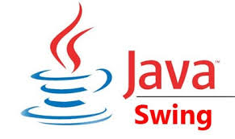
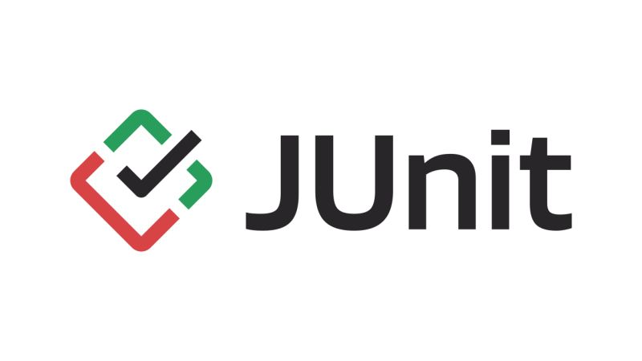
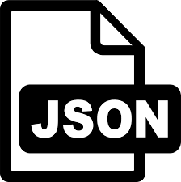

Application de Gestion Pénitentiaire
Projet Individuel - Architecture Java & Persistence

Contexte du Projet
Ce projet consiste en le développement d'une application Desktop robuste permettant d'administrer l'ensemble des ressources d'un établissement pénitentiaire (détenus, personnel, cellules et bâtiments). L'enjeu majeur était de centraliser des données sensibles au sein d'une base relationnelle tout en assurant une interface de gestion ergonomique.
Objectifs & Besoins
- Gestion multi-modules : Administration des détenus, personnels, cellules et bâtiments.
- Suivi des affectations et gestion de l'occupation des cellules en temps réel.
- Persistance des données via JDBC dans une base de données SQL.
- Interopérabilité grâce à l'import/export de données aux formats CSV et JSON.
Technologies & Concepts
 Java SE (POO)
Java SE (POO)

Swing / JFrame JDBC / SQL
JDBC / SQL

Tests JUnit
CSV / JSONTravail Réalisé
- Architecture MVC : Séparation stricte entre les modèles de données, la logique de contrôle et les interfaces Swing.
- Modélisation Relationnelle : Conception des tables et gestion de l'intégrité référentielle pour les affectations.
- Parsing de fichiers : Développement de modules d'échange pour automatiser l'intégration de listes externes.
- Qualité Logicielle : Mise en place de tests unitaires systématiques avec JUnit pour valider les règles métier.
Bilan et Compétences
- Maîtrise avancée de la POO et de l'héritage en Java.
- Capacité à gérer la persistance des données via JDBC/SQL.
- Expérience confirmée dans la rédaction de rapports de validation technique.
- Rigueur dans l'application des design patterns (MVC).